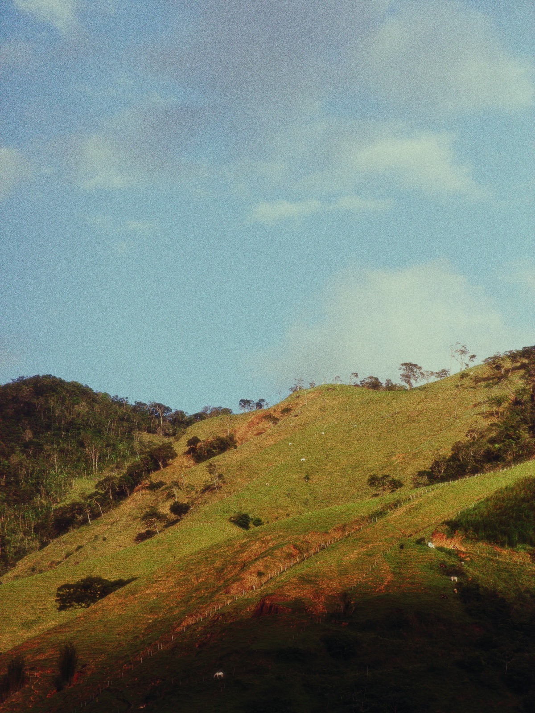
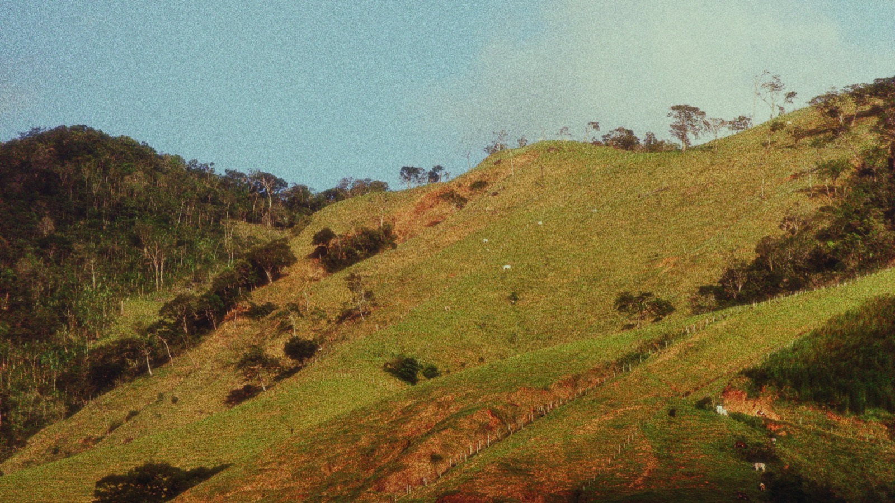

DE FILMMAKER PARA FILMMAKER
A câmera de cinema do seu iPhone.
Grave em Log com LUTs de cor de filme e revele suas fotos RAW com grão, halation e bloom. Tudo no iPhone.
TAPUÁLOG
Seu iPhone grava Log? Com o Tapuá Cam, grava.
Cada quadro é processado a partir dos dados RAW do sensor, sem o tratamento automático padrão do iPhone, e salvo em HEVC. Não é um arquivo RAW, mas preserva o que ele tem de melhor em um arquivo leve.
TapuáLog é experimental nos iPhones mais antigos. O app mostra só o que o seu iPhone suporta.

O QUE ELE FAZ
Tudo o que um set pede, no bolso.
Feito por quem filma com iPhone todo dia, para quem vive de audiovisual no celular.
COR DE FILME
LUTs 3D feitos para Apple Log e Log 2, como o Tapuá e o Mangará. Monitore com o look e grave Log limpo, ou grave o LUT no arquivo. Importe os seus .cube e controle a intensidade de cada um.
REVELAÇÃO
No modo foto, cada foto guarda o RAW (DNG) no app. Revele depois, sem destruir o original: exposição, temperatura e tint, lift, gamma e gain, grão, halation, ruído, nitidez e corte. Copie os ajustes de uma foto para várias.
TEXTURAS DE PELÍCULA
Grão, halation e bloom, em foto e vídeo.
CONTROLE MANUAL
ISO, obturador, balanço de branco com tint, foco e exposição, com histograma, zebra, peaking e nível. As lentes aparecem pela distância focal equivalente.
PARA O SET
Presets de vídeo e foto, widgets que abrem o app no preset, Shot List, gravação em HEVC ou ProRes e destino no Fotos, em Arquivos ou num SSD externo.
PRIVACIDADE
Nenhum dado é coletado. Suas fotos e vídeos ficam no seu iPhone.
GRATUITO E PRO
Comece grátis. Libere tudo quando quiser.
GRATUITO
PARA SEMPRE
- Gravação em Rec. 709
- Controle manual completo
- Look Tapuá
- Revelação do RAW: exposição, temperatura e tint
TAPUÁ CAM PRO
MENSAL · ANUAL COM 3 DIAS GRÁTIS · VITALÍCIO
- TapuáLog, Apple Log e Log 2
- ProRes
- Todos os LUTs, inclusive os seus
- Grão, halation e bloom completos
- Revelação completa
- Presets de set
Apple Log, Log 2, ProRes e algumas lentes dependem do modelo do iPhone. Os preços aparecem no app, na moeda do seu país.
QUEM FEZ
Eu testei todos. Então fiz o meu.
Sou Renan Ferreira de Vasconcellos, filmmaker. Filmo com o iPhone todo dia e nunca achei um app de câmera que fizesse tudo o que eu precisava no set.
O Tapuá Cam nasceu disso: uma câmera de cinema feita do jeito que um filmmaker usa.